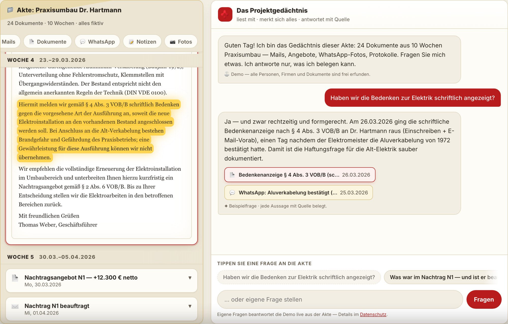
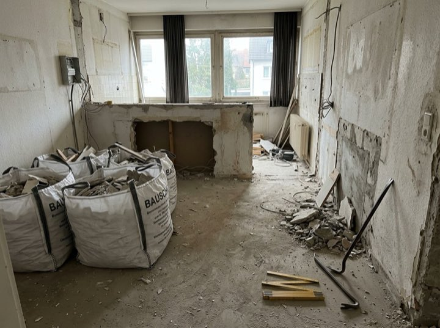
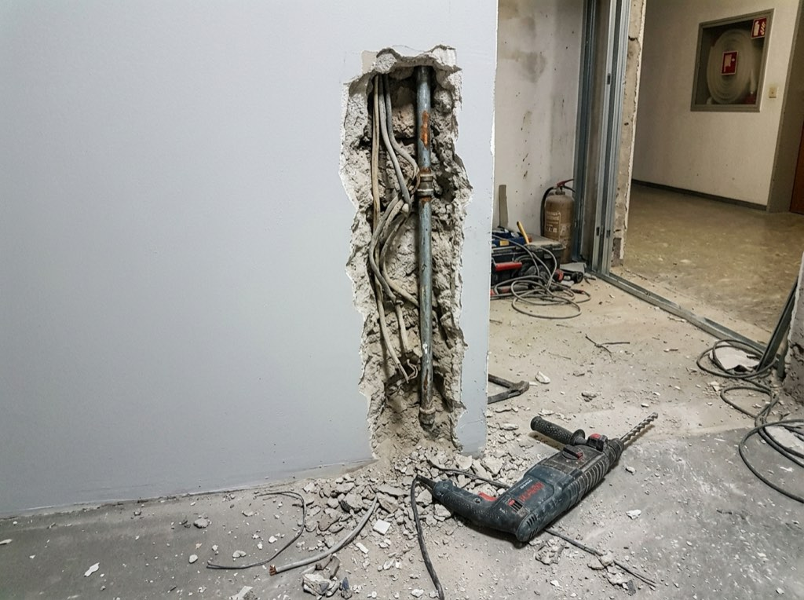

OsAI präsentiert
Kein Chatbot.
Ein Projektgedächtnis.
Wie Claude Fable 5 — Anthropics neues KI-Modell — aus einem einzigen
Auftrag „Projekt-Akte" gebaut hat: eine Live-Demo, in der eine komplette, frei erfundene
Bau-Projektakte aus 24 Dokumenten befragbar wird. Die Antwort tippt sich ein, die Quellen
poppen auf — und das belegende Original-Dokument leuchtet in der Akte auf. Fragen ohne Beleg
bekommen eine ehrliche Antwort: „Dazu steht nichts in der Akte."
Autonom gebaut — inklusive Tests, Deployment und zwei Qualitäts-Reviews.

1Prompt
24Dokumente in der Akte — alle frei erfunden
121Checks, je 2× grün — lokal und live
1Abend — Idee bis Live-URL
01 · VORGEHENSWEISEZwei Sessions, ein Workflow
Kurz erklärt: Ein KI-Agent ist mehr als ein Chatbot — er kann Dateien lesen und schreiben,
Programme ausführen, im Browser testen und deployen. Claude Code bietet dafür eine
/goal-Funktion: Man gibt ein Ziel vor, und der Agent arbeitet selbstständig
daran, bis es erreicht ist. Entscheidend ist, was man ihm als Ziel mitgibt.
Deshalb lief dieses Projekt in zwei getrennten Sessions:
A
Session 1 — Planen lassen
Die Idee in einem Satz: „Projektwissen steckt in Mails, WhatsApp und Köpfen — niemand
findet es wieder." Zwei parallele Recherche-Stränge lieferten die Grundlage:
Layout & Choreografie (wie zeigt man, dass eine Antwort belegt ist? Antwort:
Akte und Chat permanent nebeneinander, die Quelle leuchtet im Original auf) ·
Bau-Fachlichkeit (eine erfundene, aber handwerklich korrekte Projektakte nach
VOB/B — der Standard-Bauvertragsordnung: Bedenkenanzeige, Nachtrag, Abschlagsrechnungen,
Abnahmeprotokoll — damit die Akte nach echter Baustelle riecht). Verdichtet in zwei Dateien:
→ CONCEPT.md — das eingefrorene Konzept: die 24 Dokumente,
die Frage-Choreografie, die Ehrlichkeits-Regel, Schutzschicht, Phasenplan mit Quality-Gates
→ GOAL-PROMPT — der fertige, präzise Auftrag für die Umsetzung
B
Session 2 — Bauen lassen
In einer frischen Session wurde der Prompt per /goal übergeben. Der Agent
las zuerst das Konzept, dann arbeitete er sechs Phasen ab — Akte, Frage-Choreografie,
Live-Pfad, Polish, Deployment, Selbstkritik — und testete sich nach jeder Phase selbst im
echten Browser. Bis zur Live-URL: null menschliche Eingriffe.
Warum die Trennung? Planung und Umsetzung sind verschiedene Denkmodi.
Die Planungs-Session darf diskutieren, recherchieren, verwerfen. Die Bau-Session bekommt ein
eingefrorenes, recherchiertes Konzept — und kann dadurch lange autonom laufen, ohne sich zu
verlaufen. Das Konzept ist der Vertrag: „Bei Widerspruch gilt das Konzept" steht wörtlich im Prompt.
2Recherche-Stränge in der Plan-Session
2Dateien als Vertrag — Konzept + Prompt
6Bau-Phasen mit Quality-Gates
0Eingriffe bis zur Live-URL
02 · DER AUFTRAGEin einziger Prompt
Kein Lastenheft, kein Sprint-Planning, kein Entwicklerteam. Der /goal-Auftrag
aus Session 2 (gekürzt — die Struktur ist das Entscheidende). Erste Anweisung: das recherchierte
Konzept aus Session 1 lesen.
Baue „Projekt-Akte" — eine öffentliche Demo: eine komplette,
frei erfundene Projektakte „Praxisumbau Dr. Hartmann" —
24 Dokumente aus 10 Wochen: Mails, Angebote, WhatsApp-Fotos,
Protokolle — die der Besucher befragen kann. Das vollständige
Konzept liegt in CONCEPT.md — LIES ES ZUERST KOMPLETT;
bei Widerspruch gilt das Konzept.
KERN: Akte links, Gedächtnis rechts. Die Antwort tippt sich
ein, Quellen-Chips poppen auf — und in der Akte leuchtet die
exakte Passage des Original-Dokuments auf. Eiserne Regel: Es
wird NUR beantwortet, was die Akte belegt — eine kuratierte
Frage antwortet bewusst „Dazu steht nichts in der Akte."
Dazu: Wochen-Brief + offene Punkte (automatisch geführt) und
ein Live-Pfad für frei getippte Fragen mit Schutzschicht
(Tages-Limits, nichts wird gespeichert).
PHASEN MIT GATES (nacheinander, Gates ernst nehmen):
1. Akte + Dokumente ⚑ Summen, Daten und Paragrafen aller
24 Dokumente skript-geprüft konsistent
2. Frage-Choreografie ⚑ richtige Quelle je Frage, Passage
leuchtet nachweisbar, Auto-Demo genau 1×
3. Live-Pfad + Panels ⚑ Antworten nur mit Beleg aus der Akte,
Limits greifen
4. Polish ⚑ Mobil 390 px + „würde ein Geschäfts-
führer das sofort verstehen?"
5. Ship ⚑ live 2× grün inkl. echter Frage
6. Excellence-Pass ⚑ 10 Schwächen finden, Top-5 fixen
ERFOLGSKRITERIUM: Ein Geschäftsführer tippt auf „Haben wir
die Bedenken schriftlich angezeigt?", sieht die Antwort MIT dem
aufleuchtenden Original-Dokument — und denkt: Das will ich für
MEINE Projekte. Wo ist der Unterschied zu ChatGPT? Ah: Es
belegt alles. Termin.
Der Rest — jede Architektur-Entscheidung, jede Zeile Code, jeder Test,
jeder Commit — kam von der KI selbst.
03 · DER BAUSechs Phasen — und zwei Qualitätszyklen
1
Akte + Dokumente — die fiktive Baustelle zuerst
24 Dokumente einer handwerklich korrekten VOB/B-Akte: vom Angebot über die Bedenkenanzeige
zur Alt-Elektrik bis zur Schlussrechnung. Ein Prüf-Skript mit 30 Checks sicherte jede Summe, jedes
Datum und jeden Paragrafen quer über alle Dokumente — bevor die erste Oberfläche entstand.
⚑ Gate bestanden (2× grün): Akte widerspruchsfrei — die späteren Phasen fanden null Inhaltsfehler
2
Frage-Choreografie — der Geld-Moment
Frage antippen → Antwort tippt sich ein → Quellen-Chips poppen gestaffelt auf → die Akte scrollt
zum Dokument und die exakte Passage pulsiert gelb. Dazu die Auto-Demo: Die Seite stellt die erste
Frage von selbst — und die ehrliche Grenze: keine Quelle, keine Behauptung.
⚑ Gate (2× grün): jede Frage belegt mit dem richtigen Dokument, Aufleuchten im Test nachgewiesen
3
Live-Pfad + Panels — frei fragen, automatisch berichten
Frei getippte Fragen werden live aus der Akte beantwortet — Antworten ohne Beleg ersetzt der
Server konsequent durch „Dazu steht nichts in der Akte". Dazu Wochen-Brief und Offene-Punkte-Liste,
beide automatisch geführt, plus Schutz: Tages-Limits, nichts wird gespeichert.
⚑ Gate (2× grün) inkl. echter Live-Antworten: nur Belegtes, Limits greifen, alle Baustellenfotos faktengecheckt
4
Polish — „würde ein Geschäftsführer das sofort verstehen?"
Kein einziger Technik-Begriff auf der Seite (skript-geprüft) — stattdessen „liest mit, merkt sich
alles, antwortet mit Quelle". Mobil 390 px ohne Überlauf, Impressum, Datenschutz — und ein
dokumentiertes Urteil gegen genau diese Frage. Antwort: ja.
⚑ Gate (2× grün): Smartphone-Breite sauber, Erst-Load unter dem Budget
5
Ship — live in der echten Welt
GitHub-Repo, Vercel-Hosting, eigene Domain, Schlüssel-Verwaltung — komplette Deploy-Kette vom Agenten.
⚑ Gate: Suiten 2× grün gegen projekt-akte.demo.osai.solutions — inkl. echter frei getippter Frage über die Live-API
6
Excellence-Pass — der Agent kritisiert sich selbst
Auftrag im Prompt: 10 eigene Schwächen finden, die wichtigsten fixen. Die zwei größten: Die
Auto-Demo startete nach Stoppuhr — mobil lief der Aha-Moment unsichtbar unterhalb des Bildschirms ab;
jetzt startet sie erst, wenn der Chat wirklich im Blick ist. Und die Seite wurde auf
etwa die Hälfte abgespeckt (1.096 → ~650 KB Erst-Load).
⚑ Gate: Findings dokumentiert, Top-Fixes umgesetzt, Suiten erneut 2× grün
Danach: der externe Blick.
Auf den Selbst-Review folgte ein unabhängiger Fresh-Eyes-Review ohne Bau-Kontext (Urteil: 8/10,
14 Findings — von Frage-Chips, die auf dem Smartphone halb versteckt waren, bis zu einem Briefkopf-Detail).
Alle 14 wurden gefixt und live nachgetestet. Erst dann: final.
Der Moment, der hängen bleibt: Der Review las die erfundene
Akte wie ein Bausachverständiger — und stellte fest, dass die WhatsApp-Baustellenfotos die
falsche Gebäude-Epoche zeigten: Gründerzeit-Keller mit Ziegel und Keramik statt 70er-Jahre-Bürobau.
Drei Fotos wurden epochenkorrekt neu generiert — und das Baujahr der Praxis durchgängig auf 1972
gezogen, damit die Alu-Verkabelung, um die sich die halbe Akte dreht, historisch stimmt. Eine fiktive
Akte, die einer Fachprüfung standhält: Genau das ist der Anspruch.
121Checks, je 2× grün — lokal und live
14Findings im externen Review — alle gefixt
8/10Fresh-Eyes-Urteil ohne Bau-Kontext
~650 KBErst-Load — vorher 1.096 KB
04 · WERKZEUGESkills & die Beleg-Pipeline
Der Agent griff auf vorbereitete Skills zurück — wiederverwendbare Fähigkeiten mit klaren
Regeln (welches Werkzeug, welche Kosten, welche Qualitätskriterien). Der Lauf war komplett autonom:
| Skill / Werkzeug | Aufgabe im Projekt |
|---|
| Recherche-Subagenten | 2 Stränge parallel in der Plan-Session: Layout & Choreografie („Wie zeigt man belegt?") · Bau-Fachlichkeit (VOB/B-Abläufe, damit die Akte nach echter Baustelle riecht) |
| Prüf-Skript für die Akte | 30 automatische Checks über alle 24 Dokumente — jede Summe, jedes Datum, jeder Paragraf quer-geprüft, bevor die erste Oberfläche entstand |
| Bild-KI: Baustellenfotos | WhatsApp-Fotos der fiktiven Baustelle — jedes gegen den Nachrichtentext faktengecheckt (sieht man die Alu-Adern wirklich?) und gegen die Gebäude-Epoche (Baujahr 1972) |
| Quellen-Pflicht | Jede Antwort nennt Dokument + Datum. Ohne Beleg antwortet das System „Dazu steht nichts in der Akte" — die Regel ist im Code verankert, nicht nur im Text |
| Schutzschicht | Tages-Limits für frei getippte Fragen, nichts wird gespeichert — die fünf Beispielfragen verlassen den Browser gar nicht erst |
| webapp-testing (Playwright) | Selbsttests im echten Browser: 121 Checks, je 2× grün — bis hin zu „leuchtet die Passage wirklich auf?" |
| Fresh-Eyes-Review | Unabhängiger zweiter Blick ohne Bau-Kontext: 8/10, 14 Findings — darunter der Epochen-Fund bei den Baustellenfotos |
| GitHub + Vercel | Repo, Hosting, eigene Domain, Schlüssel-Verwaltung — komplette Deploy-Kette vom Agenten eingerichtet |
Die KI-Baustellenfotos — vier Momente derselben fiktiven Baustelle,
epochenkorrekt für ein Gebäude von 1972, jedes gegen den Akteninhalt geprüft:
W3 · Demontage
→
W4 · Leitungsfund
W4 · Alu-Verkabelung
→
So läuft jede Frage an die Akte — vom Antippen bis zum Beleg:
①Die Akte24 Dokumente, von einem Skript auf Widerspruchsfreiheit geprüft
→
②Die FrageAntwort entsteht nur aus dem, was in der Akte steht
→
③Der BelegQuellen-Chips mit Dokument + Datum — die Original-Passage leuchtet auf
→
④Die Grenzekeine Quelle? Dann ehrlich: „Dazu steht nichts in der Akte."
→
⑤Der SchutzTages-Limits, nichts wird gespeichert — Daten bleiben in Deutschland
Produktionsaufwand: 24 Dokumente, 8 KI-Fotos, 1 Abend.
06 · UND JETZT SIEWas heißt das für Ihre Projekte?
Die Demo zeigt eine erfundene Bau-Akte — das Prinzip funktioniert für jedes Unternehmen mit
Projekten und Kundenkommunikation: Agenturen, Planungsbüros, Hausverwaltungen, Handwerksbetriebe.
Mails, Dokumente und Fotos rein — Antworten mit Beleg raus. Vier Anwendungsfälle:
- „Wo ist das aktuelle Angebot?" — der teuerste Satz im Mittelstand.
Das Projektgedächtnis antwortet in Sekunden: Datei, Versionsstand, Quelle — statt
20 Minuten Postfach-Archäologie pro Vorgang.
- Onboarding & Vertretung in 10 Minuten — neue Mitarbeiter oder die
Urlaubsvertretung fragen sich in das Projekt ein, statt zwei Tage zu suchen. Das Wissen
steckt nicht mehr nur in Köpfen, die gerade am Strand liegen.
- Der Wochen-Brief kommt von selbst — was ist passiert, was steht an,
wer wartet auf wen: jede Woche automatisch, jede Zeile mit Quelle. Wert entsteht,
ohne dass irgendjemand etwas pflegen muss.
- Offene Punkte führen sich automatisch — Zusagen, Fristen und Restpunkte
werden aus der Kommunikation gezogen und mit Beleg gelistet. Nichts fällt mehr durchs
Raster, weil es „nur in einer Mail stand".
Das Pilot-Angebot „Projektgedächtnis":
990 € Einrichtung + 199 €/Monat — 1–3 Projekte, Frage-Antwort mit Quellen-Pflicht,
wöchentlicher Projekt-Brief, Offene-Punkte-Liste. Geld-zurück im 1. Monat. Sie müssen nichts
umstellen und nichts pflegen: Weiterleiten reicht — und Ihre Daten bleiben in Deutschland.
Alle Details stehen im Pilot-Einseiter, den wir auf Anfrage mitschicken — oder wir gehen sie
im Erstgespräch gemeinsam durch.
Stellen Sie der Akte eine Frage —
und dann reden wir über Ihre Projekte.
projekt-akte.demo.osai.solutions
30-Minuten-Erstgespräch — unverbindlich, direkt buchbar:
cal.com/osai-solutions/erstgespraech
OsAI
osai.solutions · Osman Öztopcu